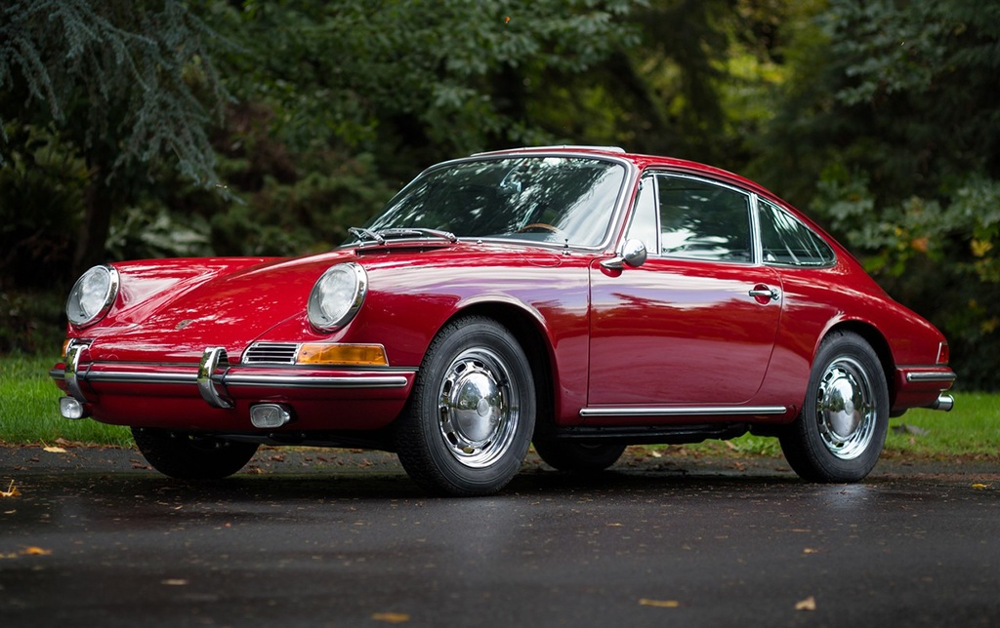

Pickup trucks have always held a special place in the hearts of automotive enthusiasts. They combine rugged utility with impressive power, making them perfect for work, adventure, and everyday driving. Whether hauling heavy loads, towing trailers, or exploring off-road trails, trucks are designed to handle it all. Enthusiasts appreciate their versatility, durability, and the feeling of control behind the wheel. Over the years, trucks have evolved from simple workhorses into high-tech machines equipped with advanced safety systems, turbocharged engines, and luxurious interiors that rival premium sedans. Customization plays a huge role in truck culture. Owners often personalize their rides with lift kits, oversized tires, LED light bars, and performance upgrades that reflect their unique style and needs. These modifications not only enhance capability but also express individuality. Pickup trucks also carry deep cultural significance—symbolizing freedom, strength, and independence. They’re more than vehicles; they’re lifestyle statements. Whether it’s the iconic Ford pickups, the dependable Chevrolet Silverado, or the bold Ram 2500, each truck tells a story of engineering excellence and personal passion. From weekend camping trips to weekday commutes, trucks offer a blend of practicality and excitement. Owning a truck means embracing a legacy of resilience, innovation, and the pure joy of driving.
Top 5 Cars Every Enthusiast Should Know
By Jayden Cooper | Published:

Car enthusiasts often have a special connection to vehicles that define the history of automotive engineering. From legendary muscle cars to high-performance sports cars, certain models are iconic and must be appreciated by anyone who loves cars. These vehicles aren’t just machines they’re milestones in design, performance, and cultural identity. Learning about them helps enthusiasts understand how engineering has evolved, how aesthetics have shifted, and how cars have reflected the spirit of their time. Here are the top five cars every car lover should know. This list includes classics from the 1960s, modern supercars, and groundbreaking models that pushed the limits of technology and design. Think of the 1964 Ford Mustang, which ignited the pony car craze, or the Lamborghini Aventador, a modern marvel of speed and style. Each car represents more than horsepower it tells a story of innovation, ambition, and passion. By studying these vehicles, enthusiasts gain a deeper appreciation for craftsmanship, mechanical ingenuity, and the pure joy of driving. Whether it’s the roar of a V8 engine or the sleek lines of a carbon-fiber body, these cars embody the essence of automotive excellence. They’re not just admired they’re celebrated as timeless icons of the road.